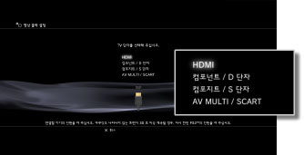
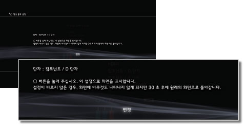
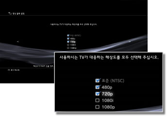
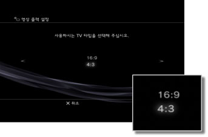
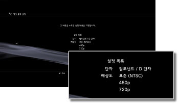

영상 출력 설정
PS3™의 영상 출력 설정을 조정합니다. 사용하시는 TV에 맞게 최적의 출력 설정을 선택합니다.
1. |
사용하시는 TV가 대응하는 해상도를 확인합니다.
해상도(비디오 모드)는 TV 타입에 따라 다릅니다. 상세한 사항은 TV의 사용설명서를 참조해 주십시오.
|
2. |
 (설정)에서 (설정)에서  (디스플레이 설정)을 선택합니다. (디스플레이 설정)을 선택합니다.
|
3. |
[영상 출력 설정]을 선택합니다.
|
4. |
TV의 접속 단자를 선택합니다.
해상도(비디오 모드)는 사용되는 단자의 종류에 따라 다릅니다.

| *1 |
비디오 모드 옵션은 PS3™를 구입한 지역에 따라 다릅니다. 북미, 아시아 및 기타 NTSC 지역에서는 480i 비디오 모드가 [표준 (NTSC)]로 표시됩니다. 유럽 및 기타 PAL 지역에서는 576i 비디오 모드가 [표준 (PAL)]로 표시됩니다. 상세한 사항은 제품에서 제공되는 사용설명서를 참조해 주십시오.
|
| *2 |
D 단자 타입은 주로 일본에서 사용됩니다. D1～D5에서 지원하는 해상도는 다음과 같습니다.
D5: 1080p / 720p / 1080i / 480p / 480i
D4: 1080i / 720p / 480p / 480i
D3: 1080i / 480p / 480i
D2: 480p / 480i
D1: 480i
|
| *3 |
S 단자 타입은 주로 일본에서 사용됩니다.
|
| *4 |
Euro-AV 커넥터 플러그는 유럽 지역에서 판매되는 PS3™에만 동봉됩니다.
|
| *5 |
AV MULTI는 주로 일본에서 사용되는 형식입니다. [AV MULTI / SCART]를 선택한 경우 출력 신호의 타입을 선택할 수 있는 화면이 표시됩니다.
|
| *6 |
SCART는 주로 유럽에서 사용되는 형식입니다. [AV MULTI / SCART]를 선택한 경우 출력 신호의 타입을 선택할 수 있는 화면이 표시됩니다.
|
|
5. |
3D TV의 디스플레이 크기를 설정합니다.
사용하시는 TV의 화면 크기에 맞춰 설정해 주십시오.
TV가 3D에 대응하지 않거나 4단계에서 [HDMI]를 선택하지 않으면 이 화면이 표시되지 않습니다.
|
6. |
영상 출력 설정을 변경합니다.
영상 출력의 해상도를 변경합니다. 4단계에서 선택한 단자의 종류에 따라서는 이 화면이 표시되지 않을 수도 있습니다.

|
7. |
해상도를 설정합니다.
사용하시는 TV가 지원하는 모든 해상도를 선택합니다. 선택한 해상도 중에서 재생할 콘텐츠에 맞추어 가장 높은 해상도의 영상이 자동 출력됩니다.*
*영상의 해상도는 1080p > 1080i > 720p > 480p/576p > 표준(NTSC:480i/PAL:576i) 순으로 선택됩니다.
4단계에서 [컴포지트 / S 단자]를 선택한 경우 해상도 선택 화면이 표시되지 않습니다.
[HDMI]를 선택한 경우 자동 설정을 선택할 수도 있습니다. (연결된 HDMI 기기의 전원이 켜져 있어야 합니다) 이 경우 해상도 선택을 위한 화면이 표시되지 않습니다.

|
8. |
TV 타입을 설정합니다.
사용하시는 TV에 맞추어 TV 타입을 선택합니다. 4단계에서 [컴포지트 / S 단자] 또는 [AV MULTI / SCART]를 선택하는 경우처럼 SD 해상도(NTSC:480p/480i, PAL: 576p/576i)로 출력할 경우에 한하여 선택합니다.

|
9. |
설정 내용을 확인합니다.
TV에 올바른 해상도로 영상이 표시되고 있는지 확인합니다.  를 누르면 이전 화면으로 돌아가서 설정을 수정할 수 있습니다. 를 누르면 이전 화면으로 돌아가서 설정을 수정할 수 있습니다.

|
10. |
설정 내용을 저장합니다.
PS3™에 영상 출력 설정의 설정 내용이 저장됩니다. 계속해서 음성 출력을 설정할 수 있습니다. 음성 출력에 대한 상세한 사항은 （설정） >  （사운드 설정） > [음성 출력 설정]을 참조해 주십시오. （사운드 설정） > [음성 출력 설정]을 참조해 주십시오.
|
알아두기
- 영상 출력 설정이 사용 중인 TV와 맞지 않으면 해상도가 변경될 때 화면에 아무것도 나타나지 않는 경우가 있으나 잠시 후에 화면이 원래 해상도로 자동으로 돌아갑니다. 30초 이상 화면에 아무것도 나타나지 않으면 본체 전원을 꺼 주십시오. 그런 다음 본체 전면의 전원 버튼에 5초 이상 손을 대어 다시 켭니다. 영상 출력 설정은 표준 해상도로 자동으로 변경됩니다.
- HDCP(High-bandwidth Digital Content Protection) 규격에 대응하지 않는 기기가 HDMI 케이블로 연결된 경우 PS3™의 영상 및 음성을 출력할 수 없습니다.
- 저작권 보호된 Blu-ray Disc의 영상을 1080p의 해상도로 출력하시려면 HDCP 규격에 대응하는 기기를 HDMI 케이블로 연결해야 합니다.
- CECH-3000/4000 시리즈에 D 단자 케이블, 컴포넌트 AV 케이블 또는 멀티 AV 케이블로 연결한 경우, Blu-ray가 사용하고 있는 저작권 보호 기술(AACS)의 규정에 의해 아날로그 고화질 출력이 제한됩니다. BD 영상 소프트(BD-ROM) 및 저작권 보호 기술이 적용된 콘텐츠(방송 프로그램 등)를 기록한 BD는 480i 해상도로 출력됩니다.
- CECH-4200 시리즈 이후에서 BD 영상 소프트(BD-ROM) 및 저작권 보호 기술이 적용된 콘텐츠를 기록한 BD를 출력할 때는 HDMI 케이블로 연결해 주십시오.